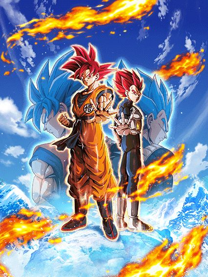
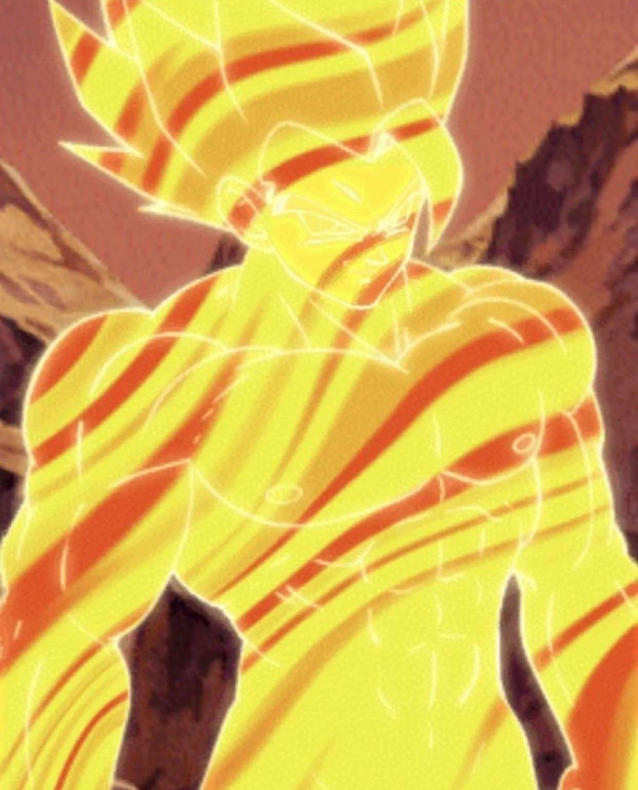
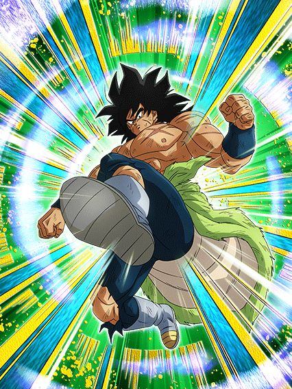
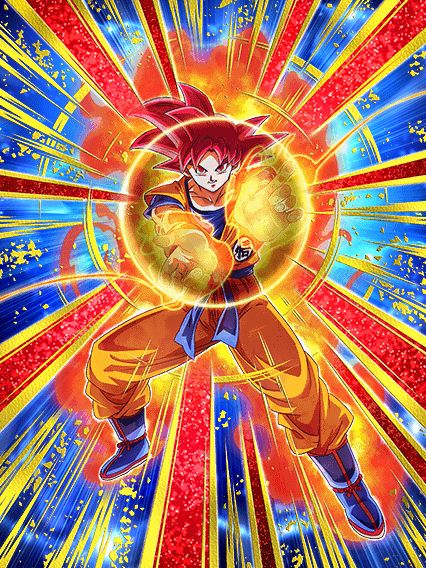
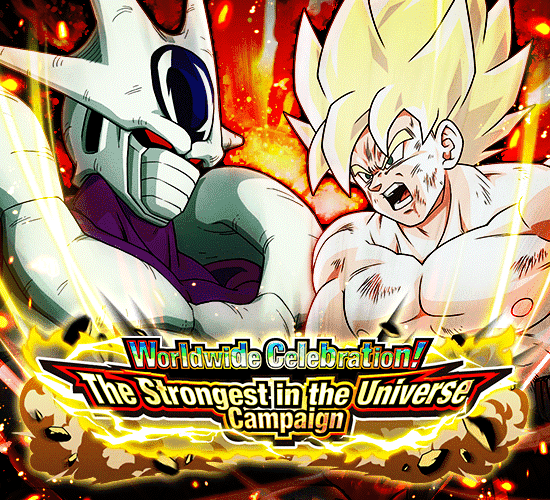
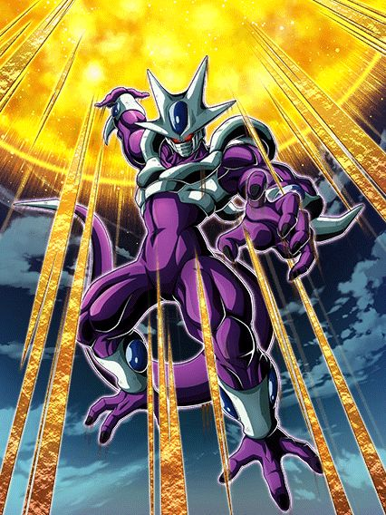
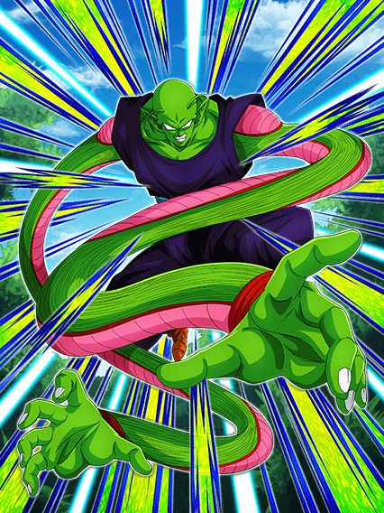
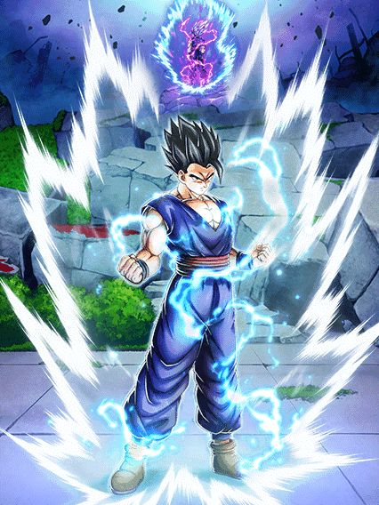
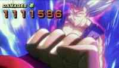
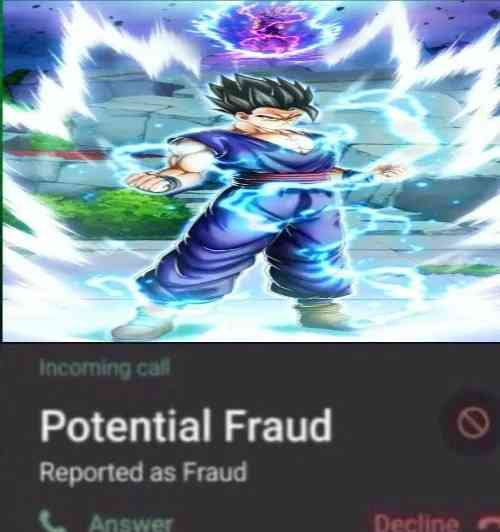

O melhor aniversário.
O sétimo aniversário foi praticamente um reboot em tudo q considerávamos normal no dokkan, introduzindo as red zones
como novo conteúdo difícil, as leader skills de 200%, intros nos cards, múltiplas actives, as novas osts de menu
feitas só pro aniversário...
Foi facilmente a celebracão mais especial na história do jogo e não tem nem oq dizer, vai ficar marcada pra
história.
OS GODS

Por que os gods são tão bons? Acho que isso é óbvio.
Além deles terem uma incrível leader skill que engloba os personagens mais fortes do jogo, eles tem ótimas
categorias fazendo com que eles fiquem em times muito bons, mas ai vc me diz: “Ah mas nem só de categoria vive um
personagem.”, beleza, então vamos falar sobre seu kit:
Antes de transformar, os gods tem um stack de ATK e DEF de 20% em seus supers, sendo assim, quanto mais supers vc
der antes de transformar, mais forte eles vão estar quanto transformarem, mas claro se você tiver 5 neurônios vc já
deve saber disso.
Então vamos falar sobre sua passiva: Assim que eles entrarem no turno, vai começar a animação de entrada que é uma
cereja no bolo, então no primeiro turno eles vão ter guarda ativa por 1 turno que é algo muito bom porque como eles
precisam stackar para ficar mais forte, no primeiro turno eles estariam muito frágeis mas com essa guarda ativa eles
se mantêm no primeiro turno.
Eles começam com 120% de ATK e DEF, e ganham 7% de chance de critico por rainbow orb obtida, e o mais incrível é q
eles dão um super ataque adicional garantido quando estão com 20 ou mais de ki, isso é algo muito bom já que eles
stackam, então eles podem acabar dando ate 3 supers no turno fazendo com que eles ganhem 60% de ATK e DEF.
E eles vão ganhar ki +1 por ki sphere obtida e vão ganhar um aumento de ATK e DEF de 77% por 7 turnos desde o
início, então é mais um buff que eles ganham no começo da batalha que é algo muito bom.
E eles ainda ganham ataques efetivos quando estão com 24 de ki e fica muito fácil para eles darem o super adicional
ou pegar o dano efetivo porque eles vão ganhar ki +2 por ki sphere obtida por 7 turnos e depois desses turnos eles
ainda vão ganhar ki +1 por ki sphere.
Eles podem usar a ativa apartir do 4º turno.
Quando você transformar os gods você vai ouvir uma das melhores OST do jogo
Mas deixando o "TRUTRUT PAPAPAPANNNNNPAPAAPNNNNNNNNN" (esse é meu despertador por sinal) de lado vamos falar do seu
novo kit, quando transformados, o ultra super attack vai desabilitar uma ação do inimigo.
Eles ganham 177% de ataque e defesa e vão ganhar ki +2 por ki sphere obtida, chance de critico e chance de desviar
+7% por rainbow orb obtida, ataques efetivos quando estão com 16 ou mais de ki, lança um super adicional quando
estão com 20 ou mais de ki e quanto mais supers, mais dano, então se você stackou bem antes de transformar, esse
card vai dar muito dano.
A active.

Pode ser ativada quando o seu HP ou do inimigo estiver em 50% ou menos, causa ultimate damage ao inimigo e todos os
ataques se tornam críticos.
Então, essa ativa é muito boa para dar muito dano cara, se vc tiver com 1 milhão de ataque que não é algo difícil
(eu to escolhendo um número baixo e se usar a ativa), você vai ganhar um aumento de 550% que vai ser 5.500.000 mais
os 1.000.000 então vc vai dar aí uns 6.500.000 de dano mais todos os seus ataques no turno que vão ser crítico
fazendo com que todos os ataques ganhem um multiplicador de 1,9 então vc vai dar quase o dobro do dano nos seus
ataques, então você vai destruir qualquer boss no turno da sua ativa. -
By Dollyinho
Broly str

Bom, ele não faz nada.
Esse cara é realmente um completo inútil
Literalmente metade do kit dele quer q ele pegue 6 orbs mas ele não é orb changer de NADA, não dá suporte, não tanka, não dá dano, qual era o objetivo desse cara? Pq ajudar os gods que não era.
Tudo bem guys, ele tem uma incrível mecânica de final blow onde ele cura 26% de HP, muito fácil fazer isso com um card q não dá dano, boa sorte :)
Os mamacos
Os macacos, vulgo os melhores personagens da categoria gt heroes.
A leader skill deles é a melhor para a categoria de gt heroes e com ela dá pra fazer uns times bem quebrados, são
ótimos parceiros de link skills. O super e ultra deles é bem roubado, deixando eles stackarem um pouco de def e
stackam atk pra caramba.
Na sua passiva temos 77% de atk e def por 7 turnos, 120% de atk e def, chance de crítico aumentada por cada rainbow
orb pega, adicional garantido com mais de 20 de ki, dá dano efetivo em qualquer inimigo se tiver pego mais de 24 de
ki e ganham o dobro de ki por cada orb que você pega.
A partir do 4º turno você pode ativar a fusão, onde tem uma animação incrível e uma linda ost.
A passiva do gogeta é bem quebrada, contando com +177% de ATK e DEF, +2 de ki por orb pega, +7% de chance de reduzir
o dano por cada rainbow orb pega, ataque efetivo em qualquer inimigo, 30% de chance de dar um critico, 50% de dar um
adicional e 50% de chance de counterar um super de inimigo.
Seu super e ultra são as melhores animações do jogo e também aumentam o ATK e DEF por turno.
Por fim temos a sua active skill, que é L I T E R A L M E N T E a melhor animação do jogo inteiro e
a melhor ost, pra ativar ela ou você ou o inimigo tem que estar com menos da metade da vida e quando ativada causa
um dano critico imenso e se o inimigo não morrer ele ainda dá critico garantido pra todos os outro golpes no turno.
- By Auã
Syn shenron teq
Gt bosses..?
Não ironicamente esse cara seria bom se o time dele não fosse morto, já q ele tem coisas boas no kit mas ele tá meio q sozinho 💀
Ele se resume a pegar 7 orbs, já que ele só tem 100% de ATK e DEF e vai pegando buffs a cada orb
Resumindo, quando vc pega 7 vc tem 220% de ATK e DEF a mais, 50% de chance de dar um super adicional e 50% de chance de crítico, oq é bem decente e ele tem big bad bosses, uma pena q de novo, gt bosses não tem nem um líder 150% em anos de jogo..
Eza do gogeta ssj4 teq
No dia q fizerem alguém parecido com esse cara, o dokkan treme.
Um eza simples mas eficaz, o gogeta tem uns números legais ali e tem 50% de ser efetivo contra tudo oq é estranho mas nada de horrível
Ele tem uma mecânica q infelizmente é uma falha q é "buildar" entre bastante aspas 25% de ATK e DEF por super feito até 50%, mas isso dura só 5 turnos oq significa q se vc não pegar um super adicional vc vai basicamente nunca ver a passiva completa do gogeta
Mas tudo se compensa com a simples mecânica mais absurda de todas: 70% DE CHANCE DE COUNTERAR TUDO
Esse cara simplesmente tem 70% de chance de ignorar todos os bosses do jogo, isso é completamente desbalanceado, 70%, mesmo que com suas falhas, é bem alto, esse gogeta praticamente não consegue ser acertado por supers
Uma pena q eles olharam demais o counter e esqueceram do resto do kit..
EZA DO GOKU GOD TEQ

QUE LENDA MEUS AMIGOS, QUE LENDA.
Esse eza carregou o aniversário inteiro, sejamos honestos, a red zone de filmes foi possivel ser feita por causa dele
O kit dele é fácil de explicar: pegue 2 rainbow orb e largue esse cara no slot 1, talvez nem precise dos orb.
Esse cara é orb changer, linka super bem com os gods (sendo o perfeito slot 1 pra eles) e pegando 2 rainbow orb vc ganha 77% de ATK e DEF, mas oq só importa realmente são os 77% DE REDUÇÃO DE DANO contra movie bosses or pure saiyans, que adivinha só, era a red zone movies inteira
Sendo praticamente invencível em tudo lá, o goku god serviu como o slot 1 perfeito, completamente quebrado e tankando tudo sem dificuldade
E eventualmente, esse cara ainda ajudaria na red zone wicked bloodline, na red zone da red ribbon E no evento do cell max, mas lá ele já tava mostrando alguns sinais de falha pq a redução de dano ajuda mas não em cima de uma defesa relativamente baixa
Em resumo esse cara é bem inútil se não estiver com a redução de dano, ele até dá um dano decente mas esse não é o papel dele, então é, ative a redução de dano e seja feliz.
A CELEBRAÇÃO DE DOWNLOADS

A melhor celebração de downloads de todas.
Essa foi facilmente a melhor celebração do ano, e nas top 3 melhores celebrações da história desse jogo, tudo foi insano do começo ao fim
Eventos, cards, tudo estava num hype insano, isso junto ao memes claro, eu amei essa época do jogo.
O RAP DO COOLER
KKKKKKKKKKKKKKKKKKKKKKKKKKKKKKKKKKKKK se ferrar mano
Não tem competição, o marketing da celebração de downloads foi simplesmente genial, o rap não é ruim, na verdade ele gruda fácil na mente e é hilário ao mesmo tempo
Nada vai superar chegar na escola e cantar com os manos "COOLA COOLA FREEZA NO BROTHA" como um bando de esquizofrênicos tá?
Literalmente ninguém esperava isso e foi incrível um rap do cooler ser a primeira coisa da celebração
Fato extra a mencionar: Na conta oficial do twitter do dokkan, o rap só tá disponível pra ver se vc estiver no japão ou obviamente usar uma VPN, oq é meio aleatório mas no momento q alguém descobriu, o negócio estourou fácil.
Eu amo esse video, de coração
Obrigado dokkan.
COOLER LR

ADICIONAIS.
TODOS ELES.
Esse mano tornou os vilões usáveis outra vez e ele por si só é um card extremamente divertido de jogar, eu amo usar ele toda vez q é possível
Acho q o mais engraçado é o cooler não ter um kit extremamente complexo mas q é muito forte e divertido, já q ele se resume a atacar 1 bilhão de vezes e ele faz isso já
Pra começar ele tem uma intro incrível com uma condição legitimamente fácil de ter outro terrifying conquerors no time, isso junto com 1 adicional a mais
E ele vai precisar de adicionais, já que além dos 100% de ATK e DEF q ele tem de base ele ganha mais 100% só que de 10 em 10 a cada ataque feito
Pode até parecer muito, mas não é, pq o cooler lança pelo menos 3 ataques por turno e com a intro, 4 (se quiser contar o hidden potential, 5, isso já é metade buildado em 1 turno)
Depois de 10 ataques, ele ainda lança um super adicional garantido, e pra esse cara, supers adicionais são a salvação pq cada super aumenta 50% de DEF no turno, isso com big bad bosses.. rapaz
Aí vc pode até pensar "ok ele ataca bastante mas o dano é bom?", mas eu lhe respondo que com certeza, já que pra garantir que ele fosse bem balanceado, esse cara STACKA ATK no ultra super attack, então é, além de todo o build atacando, esse cara ainda stacka, dá pra pedir mais de um personagem?
Dá sim.
A active do cooler é a literal nuke, depois de vc stackar sei lá quantas vezes vc mandar uma supernova absurda com uma animação linda e uma ost maravilhosa.. realmente um dos cards mais brabos do ano
Lógico, o cooler é 100% baseado no rng pra vc dar sorte nos adicionais, mas se rolar, vc cozinha muito slk
PICCOLO STR THE GOAT

O CARD MAIS GENTE BOA DESSE JOGO.
O piccolo str revolucionou o que a gente considerava normal pra suportes, além de ter sido o primeiro de muitos piccolos bons que viriam no futuro
E não tem como, esse cara funciona em qualquer time, ele é genial
O cara simplesmente tem defesa ativa, 200% de ATK e DEF no começo do turno e tem 15% de redução de dano por movie heroes na rotação PQ SIM, ELE PODE
Ele tmb ganha 50% de ATK e DEF a mais quando leva 1 golpe, além de 30% de chance de critar q não é muito oooomaga já q ele não dá tanto dano assim
O piccolo é tudo q vc poderia pedir num suporte, já q ele é um tank muito bom, e ainda dá ki e 30% de ATK e DEF pra todo mundo sem complicação ou condições horríveis
Ele tmb tem 50% de ATK e DEF contra apenas 1 inimigo e caso tenham mais de 1 ele substitui por 100% de DEF mas isso não é insanamente relevante
Em resumo, palavras não são o bastante pra descrever o quão incrível é o piccolo, o cara simplesmente é o suporte mais gente boa de todos e eu continuo amando jogar ele em qualquer time e ele cozinhar sempre
GOKU CARNIVAL
THE GOAT.
O primeiro LR carnival de todos e eu devo dizer que ele foi muito bem introduzido, sendo o primeiro lider direto 200% pra powerful comeback, animações lindas, kit muito forte e osts que eu irei falar mais depois..
Sobre o goku, ele é um card "oposto" ao cooler, já que enquanto o cooler é uma máquina de dano implacável, esse cara é um tank insano desbalanceado
Bom, esse cara stacka DEF, já começa aí a zueira pq a defesa dele já é alta, então eles decidiram colocar nele um buff de 59% de DEF quando ele leva um ataque por turno, ou seja, não dá pra ver no turno, mas se vc tem uns 300 e poucos mil de defesa, depois de tomar um ataque vc já tá na casa dos 500k
Ele tmb builda 5 de Ki e 59% de ATK com 6 golpes, oq é bem decente e é necessário ele tomar esses golpes pra dar uns 7 ou 8 milhões de dano, por sinal, quando ele leva um ataque, além do buff de DEF ele fica efetivo contra tudo, então aproveite
E aí vem a melhor parte, esse cara tem a mecânica de defesa ativa mais decente possivel, já que acima de 60% de HP vc tem defesa ativa (lembrando todos os buffs defensivos mencionados antes), e caso esteja abaixo de 60%, o goku perde a defesa ativa de propósito, pois essa é a mesma condição pro revive dele que é simplesmente inexplicável, animação incrível e a ost que foi a melhor do jogo por um bom tempo
Essa animação tá em outro nivel, e o compositor do dokkan cozinhou tudo nessa ost, é absurdo um negócio desse slk
Enfim, pós-revive vc ganha MAIS buffs, já que agora sua defesa ativa é permanente, ou seja, sem mais fraqueza, e agora o goku tem 50% de chance de crítico, oq significa q ele levar um ataque pra ficar efetivo não é obrigatório mais
É meio óbvio q a posição desse goku é ficar no slot 1 sempre, torcer pra não levar um super turno 1 slot 1 pra ele stackar um pouco e sempre levar 1 golpe pra defesa extra, e no geral tentar guardar o revive pra hora certa
Mas não acaba por aí.. pq esse cara ainda tem uma active depois de reviver
Essa active é uma coisa, tipo, ela dá um dano legal se critar mas pô, animação meio feia, q por sinal fica muito zuada se o boss for maior q o goku, pelo menos a ost e a tela de K.O são incríveis de qualquer jeito, e infelizmente ela tem a maldição de quebrar 1 ataque inimigo no começo, só que por algum motivo os bosses amam ser trolls e dar um super no segundo ataque ao invés do primeiro pra q vc fique uma caveira viva
Enfim, eu amo esse card, meu mano me carregou pela red zone inteira slk
O RAP DO METAL COOLER
Não bastou 1, precisávamos da continuação.
Pessoalmente, eu prefiro o primeiro, mas esse é muito bom também e não tem como, o "coola coola freeza no brotha" é bom demais pra não ser repetido
Eu ainda fico estupefato com isso, o marketing pra celebração foi não só 1, mas 2 raps
Eu até agradeceria o autor não sabendo quem é, mas felizmente tempos depois do rap ser lançado, o cantor decidiu se revelar no twitter, então é, fatos curiosos
Vc pode ir até a conta dele aqui se quiser.
E pessoalmente, os memes que vieram com esse rap não foram poucos, o metal cooler de terno é genial cara, tem como n
Oh um meme de minha autoria? Obrigado a mim mesmo
A
celebração do superhero (3/3)
A parte final do quebra-cabeça.
Eles buildaram hype desde o final do aniversário pra esse momento, lançaram o evento mais difícil do jogo, e ainda
fizeram os gammas cards incríveis, eles não podem errar agora né?
Bom…
Gohan "beast"

Ok, vamos imaginar que hipoteticamente vc está responsável por aguardar o lançamento do novíssimo filme de dragon
ball e decide que irá apenas lançar cards do filme 6 meses depois de ele lançar, para geral ter tempo de assistir e
acumular o hype dos personagens e como eles poderiam estar no jogo, então os cards deverão estar no ápice da
perfeição pra valer a pena a espera
Agora que você imaginou a melhor celebração do ano, se pergunte: "Como você poderia arruinar tudo?"
Ultimate Gohan, tmb conhecido como gohan "beast", gohan domesticado, gohan beastless, desapontamento místico, e para
os mais chegados, fraudehan. Simplesmente o card que não fez nenhum sentido e quebrou completamente a esperança de
todos.
Os devs tinham absolutamente tudo nas mãos para fazer a melhor celebração de todos os tempos e superar o legends de
novo por eles terem lançado um gohan beast melhor card do jogo, e de algum jeito eles conseguiram ferrar o único
personagem q não parecia ter como zuar.
O gohan começa com uma intro muito braba, com uma ost boa e 100% de ATK e DEF junto com defesa ativa por 3 turnos,
igual ao piccolo, mas diferente dele, o gohan por algum motivo tá todo errado, tendo uma mecânica de adicional
(adicional esse de 70% que nunca realmente ativa) pior q os LRs do sétimo aniversário, oq não faz sentido sendo q
eles foram lançados 11 meses antes dele no jp, além de ser o único card em anos e anos de jogo que sofre por ki. O
CARA NUNCA TEM KI
O gohan precisa lançar 5 supers pra buildar, sim, supers, sendo que o gamma 2 lançado meses antes
tem a mesma mecânica mas só precisa atacar e isso ele faz super rápido logo no primeiro turno, enquanto o gohan
precisa de pelo menos 20 de ki pra lançar o adicional dele, e como já é impossível pegar ki com ele direito e o
adicional dele não é um super garantido, fica impossível vc buildar o gohan antes do buff da intro dele acabar
Em resumo, vc deveria ter 3 turnos pro gohan ser bom, mas em 90% das vezes você não vai nem conseguir ver o gohan
buildado junto com a intro ativa, oq resume sua gameplay com um card usável por 3 turnos e medíocre pro resto da
partida, já que ele buildado sem a intro não ajuda muito e ele vai morrer pra maioria dos bosses, à não ser, é
claro, q vc ative a nulificação de supers de ki com 50% de chance de ativar dele 💀
Não era pra ser possível eles lançarem um card tão falho assim depois de terem cozinhado tudo com os gammas e o
piccolo. No momento q o filme lançou, o gohan foi destinado a ser o card n.1 do jogo, com counters, dano absurdo,
defesa ativa, crítico pra todo lado e o mais importante: A TRANSFORMAÇÃO EM BEAST

Como, COMO É POSSÍVEL lançarem um card do filme sem a transformação final do filme?
Mas não bastou lançarem o beast como uma active, a active ainda é complementada sendo horrível, a animação é
facilmente a mais linda do jogo mas não dá dano oq faz pegar a tela de ko do gohan impossível.
Sendo bem honesto, apesar do piccolo ter sido o card top 1 do jogo, essa celebração como um todo teve erros demais e
eu não irei elaborar demais no fato do jp ter feito uma campanhazinha de quiz no twitter q resultava na palavra
BEAST e alguns trailers q davam a entender q seria jogável de fato e não foi.
Só deixando bem claro q apesar de muitos memes e ódio, o gohan foi realmente um card decepcionante q foi lançado sem
revisão do time já q a única utilidade dele é ser o 200% pra saiyajins híbridos..

Eu devo admitir q essa imagem é sim bem engraçada
Você chegou ao fim dessa página!
Ou talvez.. eu não tenha terminado ainda? Sei lá
Obrigado por ler tudo, e fica a vontade pra ver outras